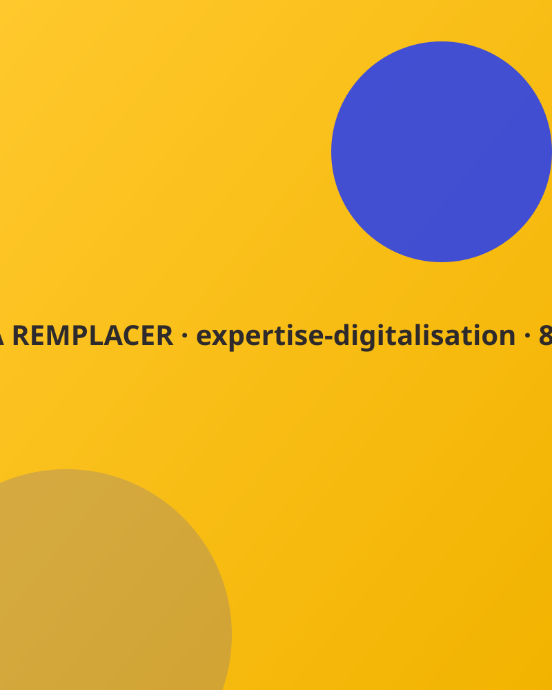
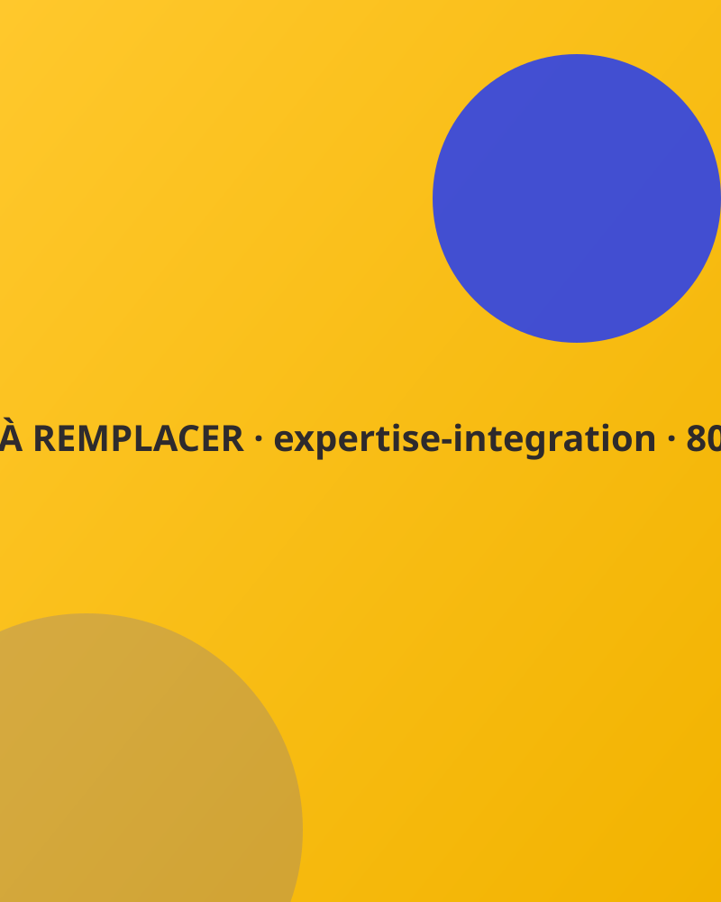
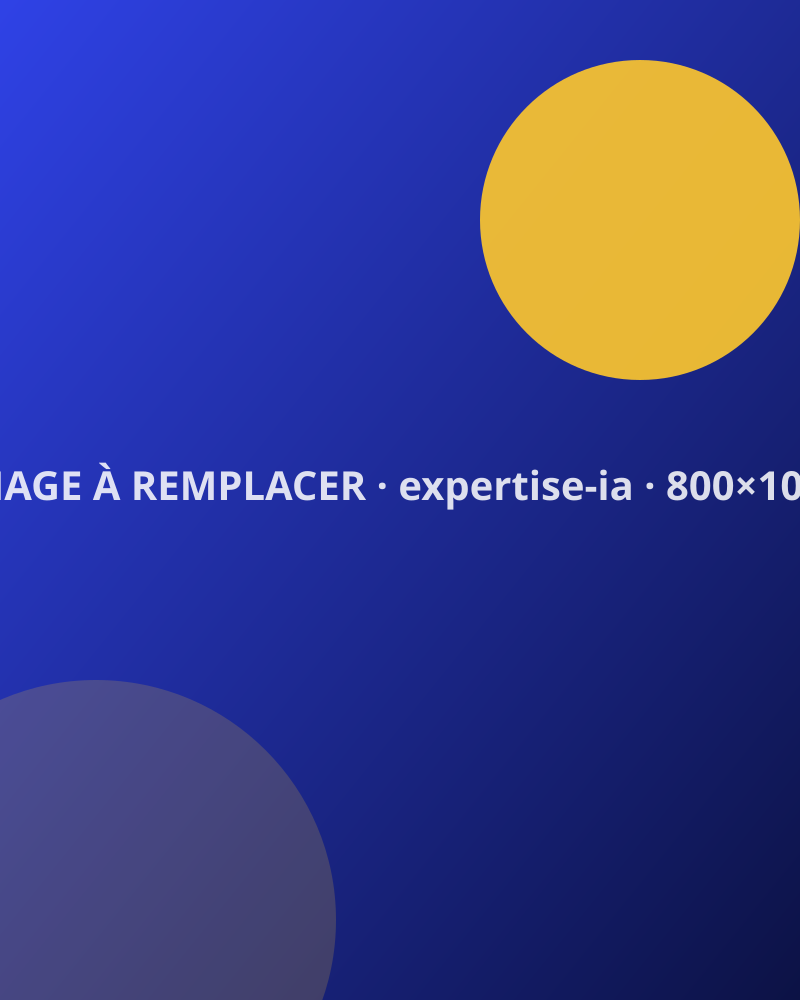
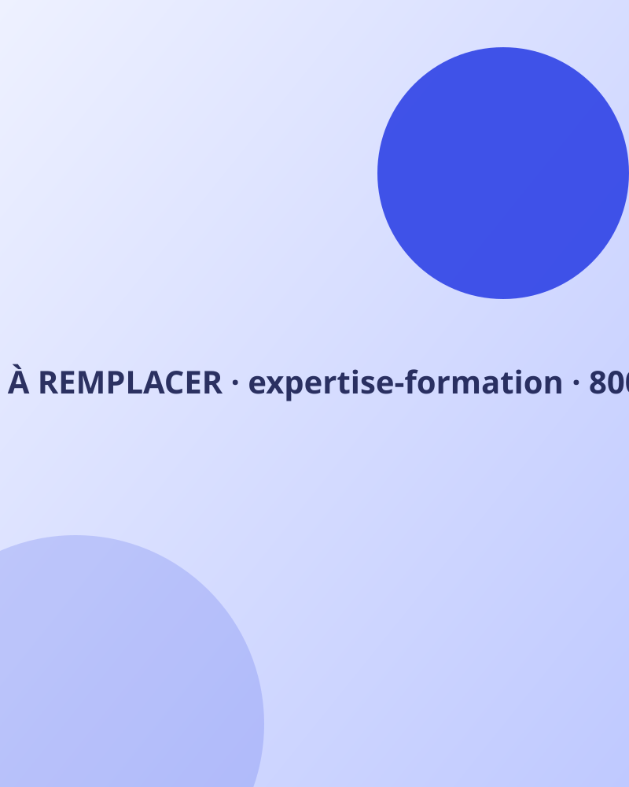
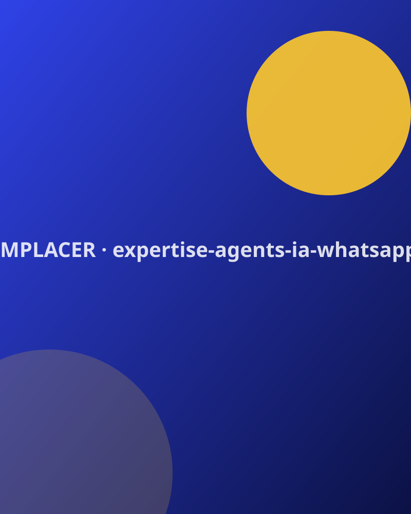

Digitalisation, IA et formation : nos expertises
Des solutions complètes, de la stratégie à l'exécution, pour moderniser vos outils, automatiser vos processus et former vos équipes.
Digitalisation d'entreprise
La digitalisation d'entreprise consiste à remplacer les tâches manuelles par des outils numériques fiables : site web professionnel, application web ou mobile, outil interne de suivi, automatisation des processus. Alissa IA conçoit chaque solution à partir de votre contexte réel, puis la déploie et la fait adopter par vos équipes.
- Création de sites web professionnels
- Développement d'applications web et mobiles
- Outils internes de gestion et de suivi
- Automatisation des processus métier
Pour qui ? PME, institutions et organisations qui travaillent encore avec des documents papier, des tableurs ou des messageries et veulent un outil fiable.

Intégration & conseil technologique
L'intégration et le conseil technologique servent à choisir les bons outils avant d'investir. Alissa IA réalise un audit digital de votre organisation, définit une feuille de route, intègre les outils retenus à vos méthodes de travail et accompagne le changement pour que vos équipes les utilisent durablement.
- Audit digital
- Conseil stratégique
- Intégration d'outils numériques
- Accompagnement au changement
Pour qui ? Dirigeants et directions qui veulent structurer leur transformation digitale sans se tromper d'outil ni de priorité.

Intelligence artificielle appliquée
L'intelligence artificielle appliquée met l'IA au service d'objectifs concrets : répondre aux clients, trier des demandes, produire des documents, automatiser des tâches répétitives. Alissa IA développe des agents IA intelligents, des assistants virtuels et des solutions IA sur mesure, adaptés à vos données et à vos usages.
- Agents IA intelligents
- Assistants virtuels
- Automatisation des tâches
- Solutions IA sur mesure
Pour qui ? Organisations qui reçoivent beaucoup de demandes répétitives et veulent gagner du temps sans perdre en qualité de service.

Formation en outils numériques & IA
La formation Alissa IA apprend aux dirigeants, aux équipes et aux étudiants à utiliser l'IA et les outils numériques dans leur travail quotidien. Les sessions sont pratiques : productivité, automatisation, marketing, service client, gestion, avec une sensibilisation aux enjeux éthiques et aux risques de l'IA.
- Formation pratique à l'utilisation de l'IA
- Productivité et automatisation avec l'IA
- IA pour le marketing, le service client et la gestion
- Sensibilisation aux enjeux éthiques et aux risques
Pour qui ? Équipes en entreprise, institutions, écoles et étudiants qui veulent maîtriser les outils d'IA plutôt que les subir.

Agents IA WhatsApp
Un agent IA WhatsApp est un assistant conversationnel intelligent qui répond à vos clients ou usagers sur WhatsApp, à toute heure. Alissa IA le conçoit, le sécurise et le gère de bout en bout pour les entreprises, institutions publiques, organisations et ONG : accueil, rendez-vous, support, diffusion d'informations.
- Accueil et orientation des usagers
- Service client automatisé
- Prise de rendez-vous
- Support RH ou administratif
- Diffusion d'informations fiables
Pour qui ? Entreprises, institutions publiques, organisations et ONG dont les usagers sont déjà sur WhatsApp.
Agent IA ou chatbot ? Un chatbot suit un scénario figé et répond par mots-clés. Un agent IA comprend une demande libre, consulte vos documents, exécute une action (rendez-vous, document, transfert) et garde le contexte. Résultat : plus de demandes traitées sans intervention humaine, avec vos règles métier comme cadre.

Parlons de votre projet.
Un besoin en digitalisation, en intelligence artificielle ou en formation ? Nous analysons votre situation et vous proposons la solution la plus adaptée.